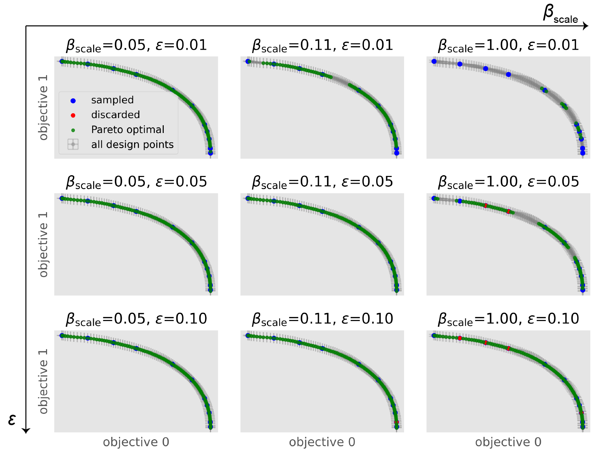
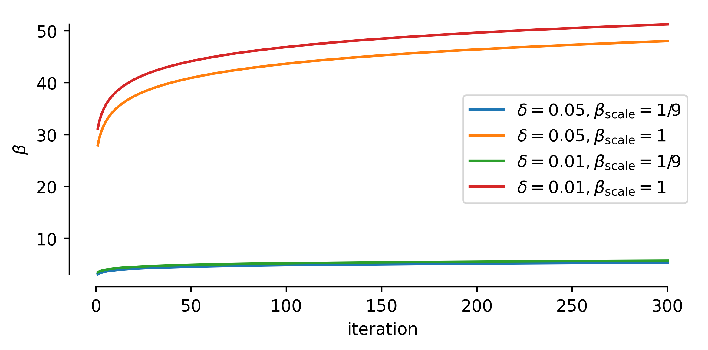

Background¶
This package implements a modified version of the ε-PAL algorithm from Zuluaga et al. in an object-oriented design. The algorithm effeciently searches for the Pareto efficient points in an unbiased manner for any number of dimensions. This package can be used with any regression model that can output means and standard deviations.
This implementation has the following features:
We ensure that the sampling is scale-invariant and that the algorithm can deal with positive and negative objective values.
Instead of using the predicted \(\hat{\mu}\) and \(\hat{\sigma}\) also for the sampled points we use the measured \(\mu\) and \(\sigma\).
This implementation is directly scalable to \(n\)-dimensional problems.
It can be easily used with any kind of regression model with uncertainty measures. For example, one can replace the Gaussian process model with a neural network with Dropout Monte Carlo for the uncertainty estimate.
The support for missing data is implemented. For example, if you measure for labeled data for only some of the objectives, you will simply need to provide np.nan for the missing measurements. The code will automatically estimate these measurements. If using coregionalized GPR models, the models will try to utilize the correlations between the objectives to improve these predictions.
In our own work, we used this algorithm for materials discovery applications.
The intuition behind the algorithm¶

The PAL algorithm iterates through the following steps:
Training a machine learning model to predict means and standard deviations for all points of the design space. This can be used to construct uncertainty hyperrectangles.
Using these points, we can use the Pareto dominance relation to classify points as Pareto optimal or to discard them. In some cases, e.g., when uncertainty hyperrectangles overlap, we will not be able to perform a classification with confidence. This is different from many Bayesian optimization approaches that couples an acquisition function such as expected improvement, which introduces a total order in the design space and hence biases the search.
Since in step (b) we discard many points (with confidence) the effective design space shrinks. This enables us to sample the next experiment from the regions near the Pareto front with points labeled as Pareto optimal and “unclassified”. Since the ultimate goal is to perform a classification of the full design space—with confidence—we sample the point with the largest hyperrectangle.
Retraining a model with this new measurement will reduce the width of the hyperrectangles.
How do the hyperparameters influence the algorithm?¶
To test the influence of hyperparameter settings we provide an example where we ran one step of the algorithm on the Binh-Korn test function.
We model every objective seperately with a Matérn-3/2 kernel, leave \(\delta=0.05\) fixed and vary \(\epsilon\) and \(\beta_\mathrm{scale}\).
We find that increasing \(\epsilon\) speeds up the algorithm, but gives us a sparser Pareto frontier. Similarly, \(\beta_\mathrm{scale}\) speeds up the algorithm by scaling the size of the hyperrectangles.
{kind=link}
As shown in the figure below, \(\beta\) depends on \(\delta\) and scaling beta down will drastically reduce the size of the uncertainty rectangles and in this way influence the convergence behavior.
{kind=link}